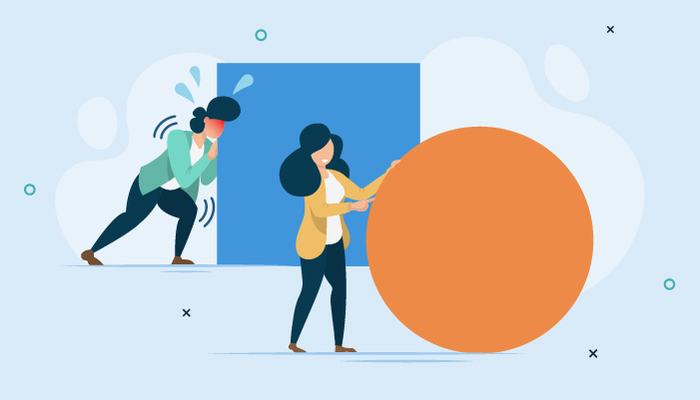
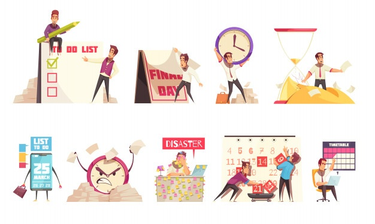
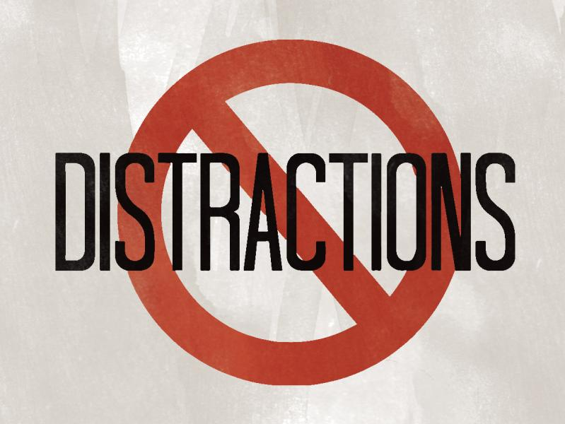
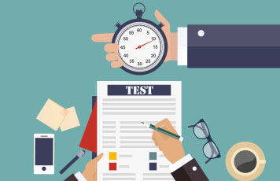
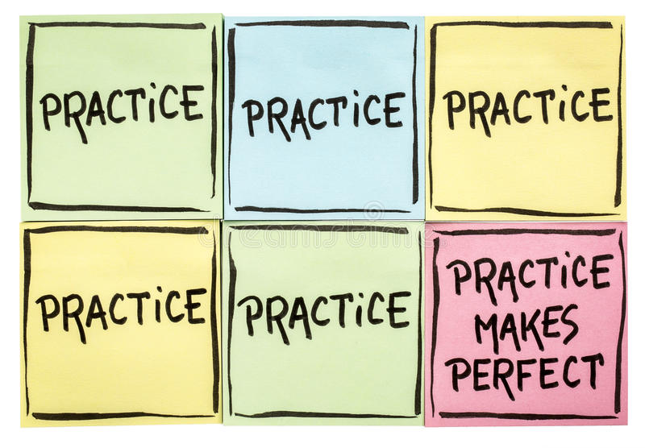

1. Work Smarter, Not Harder
Many students think the answer to success in high school or college is to repeat the same things over and over again. Read the text. Reread it. Then reread it again. And the cycle continues until you've memeorized all the concepts and definitions listed in that chapter or unit. The truth is, this studying technique is not only unbelievably time consuming, but it's also not that efficient. If you memorize everything, you will not learn anything. In order to actually learn things, as well have much more time for doing fun things- hanging with friends, going to parties, watching movies, jamming out on the guitar or whatever it is your heart desires, you need to start utilizing better studying techniques that actually help you learn without hours upon hours of review. The btter way to approach studying is to study in intervals of anywhere from 30 minutes to an hour with 5 to 15 minute breaks. But when you're studying, you need to be 100% concentrated and not distracting by anything else- this is your studying time. Breaks are also very important, because during that time, your part of your brain which focuses on intense problem-solving turns off other parts of your brain are learning and finding solutions without you even reaizing. Another great tip is to do your homework as early as you can! your brain is more tired and easily distracted at night, thus making it less than ideal to study during. You should also do the hardest work first, so that your mind is still fresh and able to do it tp the best of its ability
Key Idea: Ditch rote review and start using techniques designed for learning, not memorization.
2. Get Organized!
You can't start studying efficiently if you don't have a time and place that you're planning to study in. This brings us to the next part of a successful education- managing your time well. You may actually have less free time than you realize, and that's why it's important to have a schedule. This doesn't mean planning your day down to the minute- it just means knowing your upcoming deadlines and what you want to achieve today. The best way to stay on top of your life is witha very simple calendar and to-do loist. First off, set up your large calendar- put in everything you want to do each day and your upcoming deadlines, then find out what you want to do that day. Put all those on a daily checklist and take it with your during your day. Whenever you finish a task, cross it out. When you get new homework or have knew deadlines, just write it down on the other side of the paper and put all of that into your large calendar and find a time for everything. This process only takes 5 minutes a day, and you never have to be stressed about looming deadlines or unfinished homework. This is a also a great way to avoid cramming.
Key Idea: To lead a stress-free life, take control over your time and make yourself a calendar and daily checklist.
3. Get Rid of Distractions
As you already know, it is much more useful to study in short periods with breaks in between rather than for hours on end. But the it is critical to remember is that during the half or one hour periods that you dedicate to studying, you should be completetly focused. Nothing should be breaking your concentration or interrupting you while you are studying. You have to have your electronic devices off or far away- you can check them during breaks. The next thing is that you should have a designated place for your studying- a desk or table with no other people with everything you need, so that you don't have to get up. This lets your brain know that it is about to learn, causing it to prime itself to take in information. And although some forms of classical music help you study, the best thing to do is to study in silence- upbeat music with catchy lyrics is a huge distraction. Last of all, and though this may seem counterintuitive- stop multitaking! Don't study when doing chores or goign to the gym- studying should have a time and a place, and not only do you not learn while multitasking- you also take away from the activity that you are doing in that moment.
Key Idea: When you study- study hard. Have no distractions(music, chatting with friends, checking your phone) and 100% focus- this will lead to the best results.
4. Test Yourself!
Upon hearing the word test, most students tend to cringe and panic just a little bit on the inside. But did you know that testing yourself before an actual test is actaully one of the best ways to prepare? At each learing milestone that ou've reached(i.e. end of a chapter or unit), test yourself on the material you have learned. And if you make mistakes on that test- all the better! Research has proven that if you make a mistake on a tes or exam, you are much more likely to remember that particular mistake and the correct solution or answer. Self-testing also makes you more comfortable with actual test-taking, so when it comes to the real thing, you'll be a lot more at ease and consequently perform better. You can start test yourself using online tests an quizzes, flashcards, working on the problems given in your school textbooks, partnering with a classmate or coursemate and preparing tests for one another and them taking them from each other, and so much more.
Key Idea: Although tests can be stressful, testing yourself as a part of you study routine is proven to be one of the most effective methods of learning.
5. Practice Makes Perfect
While it is not efficient to reread a chapter or passage ten or twenty times, it is very important to repeat the information you learn in spaced intervals. Just like you practice any sport or musical instrument, you need to practice the material you learn. If you learn a certain topic one day, add it into your daily studying schedule. Try to recall what you learned that day the next day, then after a days or week, then a couple of weeks, and so on. With each repetition, recalling the information will become easier and easier, and you'll know that specific topic like your times tables before you know it. Studying something during a short period of time and then practicing and recalling it during other spaced-out short periods of time is so much more effective than just studying it for 5 hours in one session and never coming back to it. This is another reason why you should avoid cramming- you need to have time to recall the material several times if you want to learn it really well.
Key Idea: Just like you would for sport or musical instruments- you need to practice, practice, practice for academics too!